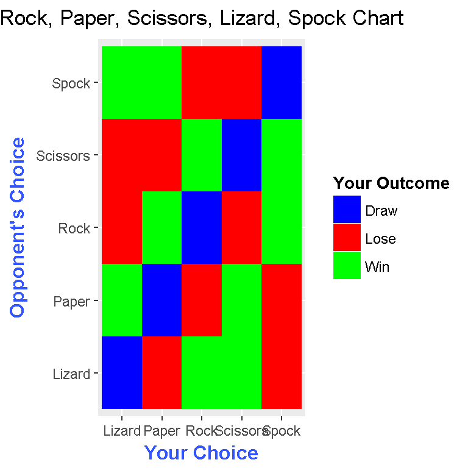
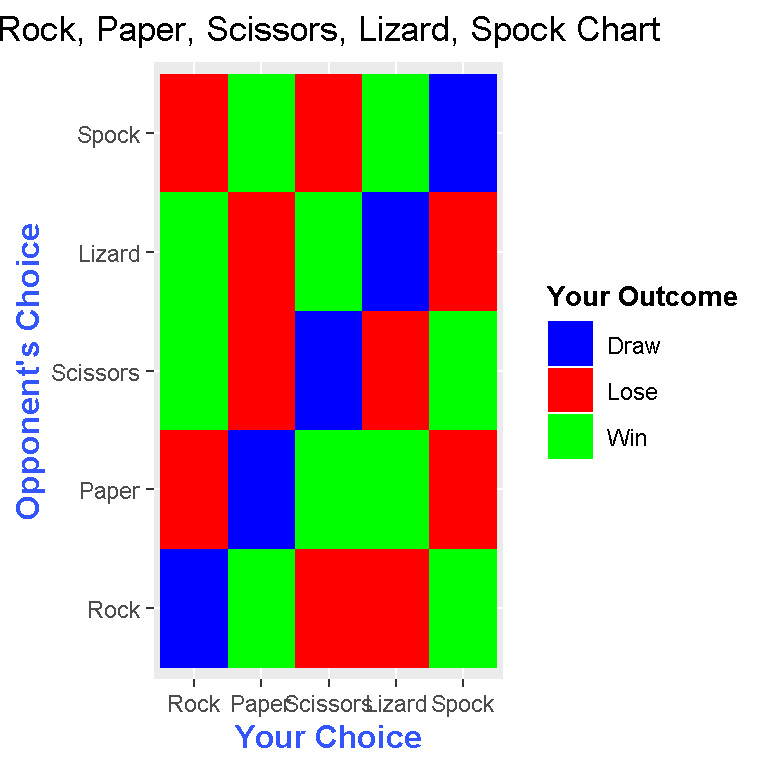

Creating A Rock, Paper, Scissors, Lizard, Spock Table In R
Hi there. This is a follow up from a previous page on me making a Rock, Paper, Scissors matrix plot/table in the statistical programming language R.
Table Of Contents
- Adding The Lizard & Spock
- Creating The Outcome Table In R
- Creating The Matrix Plot In R
- An Alternate Method To Creating The Outcome Table
- References
Adding The Lizard & Spock
The game of Rock, Paper, Scissors, Lizard, Spock is merely an extension of Rock, Paper, Scissors. We have added the lizard and the Spock as extra options. Just like the other options, the lizard and the spock has its own strengths and weaknesses. Here is a summary visual from the link http://www.momsminivan.com/rock-paper-spock.jpg on which beats what. (A draw occurs when both players choose the same thing.)

Creating The Outcome Table In R
In Rock, Paper, Scissors, we can create a table with 9 rows and 3 columns. The 9 rows is from 3 choices from the player multiplied by the 3 choices from the opponent. The 3 columns represent the choice from the player, the choice from the opponent and the outcome for the player (Draw, Win, Loss).
With Rock, Paper, Scissors, Lizard, Spock, both players choose one out of choices. We would have 25 rows and 3 columns.
In R, we first create an empty matrix with missing values (NA). Then we convert this matrix into a data frame.
# Create empty table:
dataTable <- matrix(data = NA, nrow = 25, ncol = 3, byrow = TRUE)
dataTable <- as.data.frame(dataTable)
The column names in the data table can be filled in using the colnames() function.
colnames(dataTable) <- c("You", "Opponent", "Outcome")
Next, some of the data is being filled in.
# Fill in columns
dataTable[, 1] <- c(rep("Rock", 5), rep("Paper", 5), rep("Scissors", 5),
rep("Lizard", 5), rep("Spock", 5))
dataTable[, 2] <- c(rep(c("Rock", "Paper", "Scissors", "Lizard", "Spock"), 5))
# Check:
dataTable## You Opponent Outcome
## 1 Rock Rock NA
## 2 Rock Paper NA
## 3 Rock Scissors NA
## 4 Rock Lizard NA
## 5 Rock Spock NA
## 6 Paper Rock NA
## 7 Paper Paper NA
## 8 Paper Scissors NA
## 9 Paper Lizard NA
## 10 Paper Spock NA
## 11 Scissors Rock NA
## 12 Scissors Paper NA
## 13 Scissors Scissors NA
## 14 Scissors Lizard NA
## 15 Scissors Spock NA
## 16 Lizard Rock NA
## 17 Lizard Paper NA
## 18 Lizard Scissors NA
## 19 Lizard Lizard NA
## 20 Lizard Spock NA
## 21 Spock Rock NA
## 22 Spock Paper NA
## 23 Spock Scissors NA
## 24 Spock Lizard NA
## 25 Spock Spock NA
I run this check to check my table is okay so far and error free. This check also helps the reader visualize how the code works. Now, we have the outcome column to fill in.
For the outcome column in the data, I am filling it in manually. After that, I put the outcomes column into the third column of the data table and convert the column as factors.
# Filling In The Outcome Column:
outcome_col <- c("Draw", "Lose", "Win", "Win", "Lose",
"Win", "Draw", "Lose", "Lose", "Win",
"Lose", "Win", "Draw", "Win", "Lose",
"Lose", "Win", "Lose", "Draw", "Win",
"Win", "Lose", "Win", "Lose", "Draw")
# Place outcome_col as third column and convert as factors:
dataTable[, 3] <- as.factor(outcome_col)
We can perform a check to make sure our table is formatted correctly.
# Check again:
dataTable## You Opponent Outcome
## 1 Rock Rock Draw
## 2 Rock Paper Lose
## 3 Rock Scissors Win
## 4 Rock Lizard Win
## 5 Rock Spock Lose
## 6 Paper Rock Win
## 7 Paper Paper Draw
## 8 Paper Scissors Lose
## 9 Paper Lizard Lose
## 10 Paper Spock Win
## 11 Scissors Rock Lose
## 12 Scissors Paper Win
## 13 Scissors Scissors Draw
## 14 Scissors Lizard Win
## 15 Scissors Spock Lose
## 16 Lizard Rock Lose
## 17 Lizard Paper Win
## 18 Lizard Scissors Lose
## 19 Lizard Lizard Draw
## 20 Lizard Spock Win
## 21 Spock Rock Win
## 22 Spock Paper Lose
## 23 Spock Scissors Win
## 24 Spock Lizard Lose
## 25 Spock Spock Drawstr(dataTable)## 'data.frame': 25 obs. of 3 variables:
## $ You : chr "Rock" "Rock" "Rock" "Rock" ...
## $ Opponent: chr "Rock" "Paper" "Scissors" "Lizard" ...
## $ Outcome : Factor w/ 3 levels "Draw","Lose",..: 1 2 3 3 2 3 1 2 2 3 ...
Creating The Matrix Plot In R
Now that the table is nicely formatted, the matrix plot can be generated.
First, we load the ggplot2 library in R. (You could also load ggplot2 at the very beginning.)
library(ggplot2)
The ggplot() command along with geom_tile() and other addon commands are used to generate the matrix plot.
# Creating the Rock, Paper, Scissors Matrix Plot:
ggplot(dataTable,aes(x = dataTable[, 1],y = dataTable[, 2],fill = dataTable[, 3])) +
geom_tile() +
scale_fill_manual(values = c('blue','red', "green")) +
labs(x = "Your Choice", y = "Opponent's Choice",
title = "Rock, Paper, Scissors, Lizard, Spock Chart", fill = "Your Outcome") +
theme(plot.title = element_text(hjust = 0.5),
axis.title.x = element_text(face="bold", colour="#3355FF", size = 12),
axis.title.y = element_text(face="bold", colour="#3355FF", size = 12),
legend.title = element_text(face="bold", size = 10))
In ggplot(), I specify dataTable as my data object, the first column of dataTable to go with the x-axis, the second column of dataTable to go with the y-axis and the third column of dataTable to determine the fill colours.
The command geom_tile() is crucial for obtaining this matrix plot.
The command scale_fill_manual(values = c('blue','red', "green")) gives the colours for Draw, Loss and Win respectively.
I include labels using the labs() command. Inside labs(), you need to specify which labels you want.
I can change the label fonts and title fonts using theme(). The title can be centered using plot.title = element_text(hjust = 0.5) inside theme(). I use element_text() inside theme to modify the labels I want to change. Note that “#3355FF” is the HTML code for the blue shade I have selected.
An Alternate Method To Creating The Outcome Table
There is an alternate way to create the outcome table. The previous table involved create an empty matrix, converting it into a data frame and filling in the data in a more manual fashion.
This alternate way uses Cartesian products from Set Theory. You can use the function expand.grid() in R to create the table in a more efficient manner. The code to create the table can be found below.
## Alternate/Faster Way:
library(ggplot2)
choices <- c("Rock", "Paper", "Scissors", "Lizard", "Spock")
dataTable <- expand.grid(choices, choices)
dataTable <- as.data.frame(dataTable)
dataTable## Var1 Var2
## 1 Rock Rock
## 2 Paper Rock
## 3 Scissors Rock
## 4 Lizard Rock
## 5 Spock Rock
## 6 Rock Paper
## 7 Paper Paper
## 8 Scissors Paper
## 9 Lizard Paper
## 10 Spock Paper
## 11 Rock Scissors
## 12 Paper Scissors
## 13 Scissors Scissors
## 14 Lizard Scissors
## 15 Spock Scissors
## 16 Rock Lizard
## 17 Paper Lizard
## 18 Scissors Lizard
## 19 Lizard Lizard
## 20 Spock Lizard
## 21 Rock Spock
## 22 Paper Spock
## 23 Scissors Spock
## 24 Lizard Spock
## 25 Spock Spock
From here, a third empty column can be added. The third column still has to be inputted manually and accordingly.
# Add third column:
dataTable[ , 3] <- NA
# Add column names:
colnames(dataTable) <- c("You", "Opponent", "Outcome")
# Check:
dataTable## You Opponent Outcome
## 1 Rock Rock NA
## 2 Paper Rock NA
## 3 Scissors Rock NA
## 4 Lizard Rock NA
## 5 Spock Rock NA
## 6 Rock Paper NA
## 7 Paper Paper NA
## 8 Scissors Paper NA
## 9 Lizard Paper NA
## 10 Spock Paper NA
## 11 Rock Scissors NA
## 12 Paper Scissors NA
## 13 Scissors Scissors NA
## 14 Lizard Scissors NA
## 15 Spock Scissors NA
## 16 Rock Lizard NA
## 17 Paper Lizard NA
## 18 Scissors Lizard NA
## 19 Lizard Lizard NA
## 20 Spock Lizard NA
## 21 Rock Spock NA
## 22 Paper Spock NA
## 23 Scissors Spock NA
## 24 Lizard Spock NA
## 25 Spock Spock NA# Input third column (outcome) data accordingly:
dataTable[, 3] <- c("Draw", "Win", "Lose", "Lose", "Win",
"Lose", "Draw", "Win", "Win", "Lose",
"Win", "Lose", "Draw", "Lose", "Win",
"Win", "Lose", "Win", "Draw", "Lose",
"Lose", "Win", "Lose", "Win", "Draw")
# Place outcome_col as third column and convert as factors:
dataTable[, 3] <- as.factor(dataTable[, 3])
# Check structure:
str(dataTable)## 'data.frame': 25 obs. of 3 variables:
## $ You : Factor w/ 5 levels "Rock","Paper",..: 1 2 3 4 5 1 2 3 4 5 ...
## $ Opponent: Factor w/ 5 levels "Rock","Paper",..: 1 1 1 1 1 2 2 2 2 2 ...
## $ Outcome : Factor w/ 3 levels "Draw","Lose",..: 1 3 2 2 3 2 1 3 3 2 ...
## - attr(*, "out.attrs")=List of 2
## ..$ dim : int 5 5
## ..$ dimnames:List of 2
## .. ..$ Var1: chr "Var1=Rock" "Var1=Paper" "Var1=Scissors" "Var1=Lizard" ...
## .. ..$ Var2: chr "Var2=Rock" "Var2=Paper" "Var2=Scissors" "Var2=Lizard" ...# Check #2:
dataTable## You Opponent Outcome
## 1 Rock Rock Draw
## 2 Paper Rock Win
## 3 Scissors Rock Lose
## 4 Lizard Rock Lose
## 5 Spock Rock Win
## 6 Rock Paper Lose
## 7 Paper Paper Draw
## 8 Scissors Paper Win
## 9 Lizard Paper Win
## 10 Spock Paper Lose
## 11 Rock Scissors Win
## 12 Paper Scissors Lose
## 13 Scissors Scissors Draw
## 14 Lizard Scissors Lose
## 15 Spock Scissors Win
## 16 Rock Lizard Win
## 17 Paper Lizard Lose
## 18 Scissors Lizard Win
## 19 Lizard Lizard Draw
## 20 Spock Lizard Lose
## 21 Rock Spock Lose
## 22 Paper Spock Win
## 23 Scissors Spock Lose
## 24 Lizard Spock Win
## 25 Spock Spock Draw
# Creating the Rock, Paper, Scissors Matrix Plot:
ggplot(dataTable,aes(x = dataTable[, 1],y = dataTable[, 2],fill = dataTable[, 3])) +
geom_tile() +
scale_fill_manual(values = c('blue','red', "green")) +
labs(x = "Your Choice", y = "Opponent's Choice",
title = "Rock, Paper, Scissors, Lizard, Spock Chart", fill = "Your Outcome") +
theme(plot.title = element_text(hjust = 0.5),
axis.title.x = element_text(face="bold", colour="#3355FF", size = 12),
axis.title.y = element_text(face="bold", colour="#3355FF", size = 12),
legend.title = element_text(face="bold", size = 10))
This “alternate” matrix plot is a little different from the one before as the order is now Rock, Paper, Scissors, Lizard, Spock.
References
- http://stackoverflow.com/questions/10232525/geom-tile-heatmap-with-different-high-fill-colours-based-on-factor
- http://stackoverflow.com/questions/16074440/r-ggplot2-center-align-a-multi-line-title
- http://docs.ggplot2.org/dev/vignettes/themes.html
- http://docs.ggplot2.org/current/theme.html
- https://scriptsandstatistics.wordpress.com/2017/03/30/how-to-plot-a-companion-planting-guide-using-ggplot2/